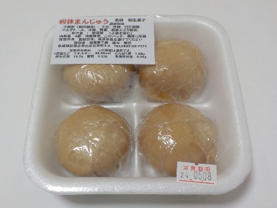
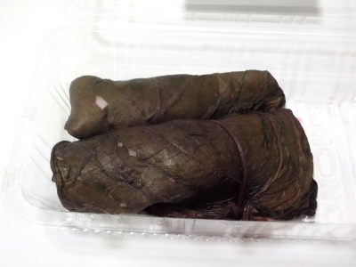
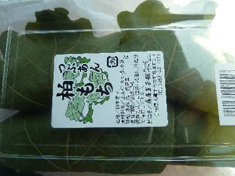
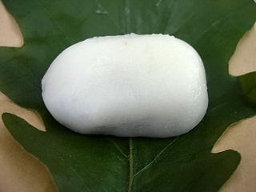

扇屋菓子舗の利休まんじゅう。
2024/05/08

ホクホクっとした皮の中に、しっとりしたこしあんが入っていました。
皮が薄くないので、おまんじゅうらしさがあっていいバランスだなと思いました。
甘さもマイルドで丁度いい味でした。
島根県出雲市今市町北本町3丁目4
2024/05/08

ホクホクっとした皮の中に、しっとりしたこしあんが入っていました。
皮が薄くないので、おまんじゅうらしさがあっていいバランスだなと思いました。
甘さもマイルドで丁度いい味でした。
2023/02/28

桜餅に近いお菓子です。桜餅に似た感じのものが赤紫蘇でぐるっと巻いてあります。
赤紫蘇の味が濃いので、よくある赤紫蘇の桜餅とは違う感じがしました。
紫蘇がメインのお饅頭だと思いました。
2018/04/21

マルマン大社店で扇屋さんの柏餅を買いました。
店舗はなかなか行きにくいですが、スーパーは駐車場広いので行きやすいです。
しっとりしててやわらかい柏餅でした。水饅頭でも麩饅頭でもない、独特な柔らかさでした。
するっと食べちゃうので、もっと食べたいって気分になりました。
2009/05/02

ゴールデンウィークも始まって子供の日も近いので、かしわ餅が食べたいなーっと思い、扇屋さんの知井宮店で柏餅を買いました。（1個90円） 長細い団子の柏餅です。
団子の部分よりも餡子の割合が多いので、和菓子のお饅頭っぽい味でした。
甘くてしっとりとしていていいですね。団子部分が多くないので、粉っぽいなんてこともなかったです。